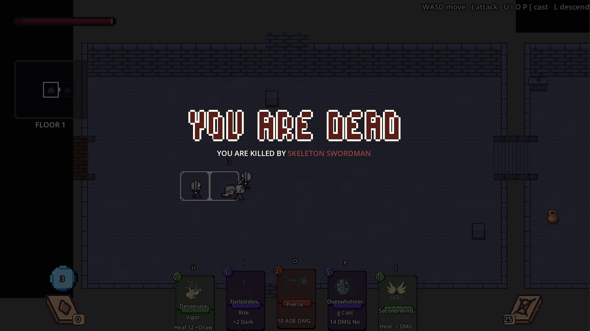

The Chronicles of Gilbert
A real-time action card battler. Your cards are your skills, and the fight keeps going while you play them.
- Role
- UI design and implementation
- Date
- Built with
- Godot 4, GDScript

My part
I designed the UI and built it in Godot 4. My GDScript work on this project was the UI only. I didn’t program the combat.
How it plays
You go into dungeons to fight an unknown force that’s invading Earth. Moving and dodge-rolling are always available, and your cards work as skills on top of that.
You build the deck before a run, but you play it in real time while you position and dodge. A strong hand only helps if you can find the moment to use it.
Screenshots
